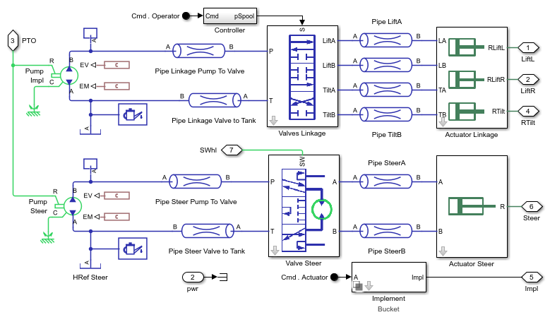
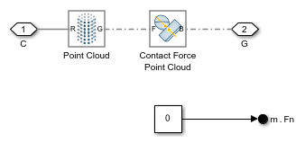
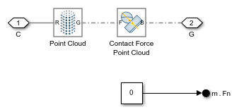
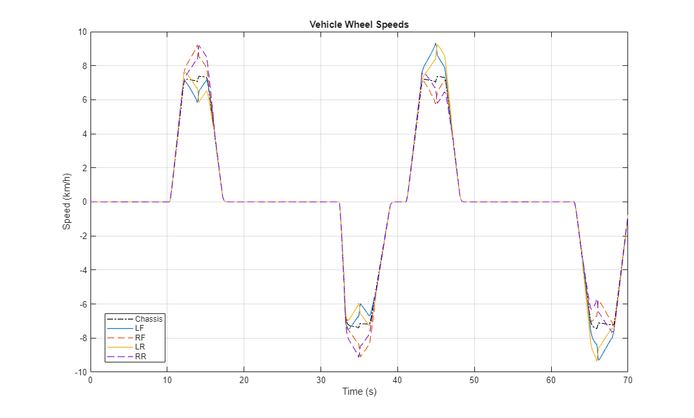
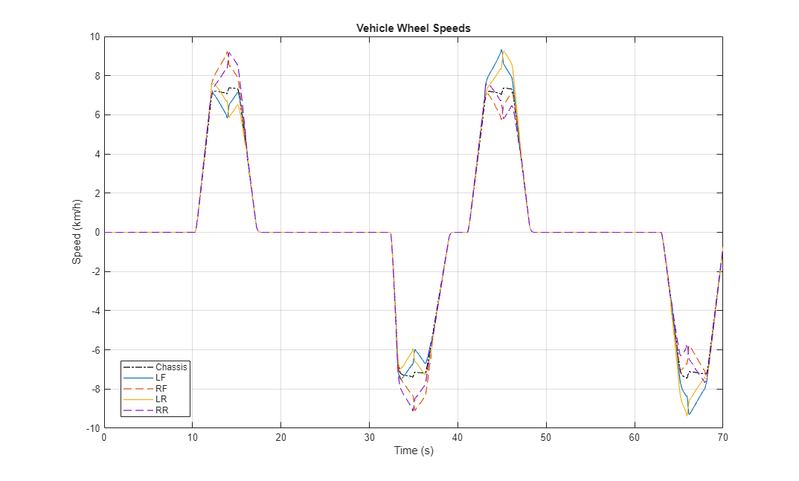

Wheel Loader Chassis, Drivetrain, and Linkage

(return to Wheel Loader Design with Simscape Overview)
This example models a wheel loader drivetrain and chassis.
Contents
Model
This example models a wheel loader drivetrain and chassis.
Vehicle Subsystem
Vehicle model with articulated chassis, driveline, and linkage.

Simulation Results: Load Cycle, 1D Driveline
Run load cycle test with 1D driveline and bucket.
Elapsed Sim Time = 12.1661


Simulation Results: Load Cycle, 1D Driveline, Multibody Magic Formula Tire
Run load cycle test with 1D driveline and bucket.
Elapsed Sim Time = 16.0464
 
 
Simulation Results: Load Cycle, 3D Driveline, CV Joints
Run load cycle test with 1D driveline and bucket.
Elapsed Sim Time = 84.614

 
 Simulation Results: Load Cycle, 3D Driveline, U-Joints
Run load cycle test with 1D driveline and bucket.
Elapsed Sim Time = 160.0866